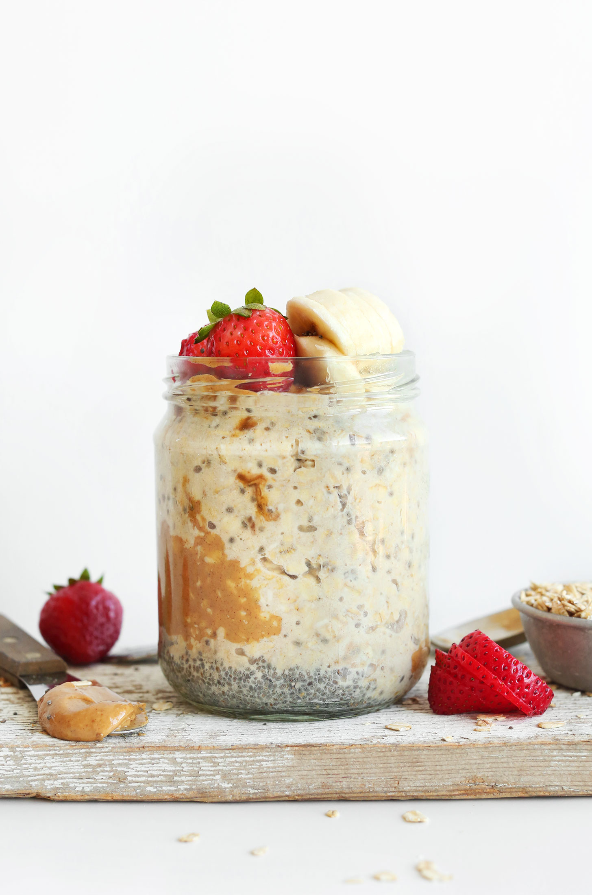

Overnight oats

Peanut Butter Overnight Oats
Lots of protein
Ingredients
- 1/2 cup unsweetened plain almond milk (or sub other dairy-free milks, such as coconut, soy, or hemp!)
- 3/4 Tbsp chia seeds
- 2 Tbsp natural salted peanut butter or almond butter (creamy or crunchy // or sub other nut or seed butter)
- 1 Tbsp maple syrup (or sub coconut sugar, organic brown sugar, or stevia to taste)
- 1/2 cup gluten-free rolled oats (rolled oats are best, vs. steel cut or quick cooking)
Steps
- To a mason jar or small bowl with a lid, add almond milk, chia seeds, peanut butter, and maple syrup (or other sweetener) and stir with a spoon to combine. The peanut butter doesn’t need to be completely mixed with the almond milk (doing so leaves swirls of peanut butter to enjoy the next day).
- Add oats and stir a few more times. Then press down with a spoon to ensure all oats have been moistened and are immersed in almond milk.
- Cover securely with a lid or seal and set in the refrigerator overnight (or for at least 6 hours) to set/soak.
- The next day, open and enjoy as is or garnish with desired toppings (see options above). See more flavor/topping suggestions in the blog post above!
- OPTIONAL: You can also heat your oats in the microwave for 45-60 seconds (just ensure there’s enough room at the top of your jar to allow for expansion and prevent overflow), or transfer oats to a saucepan and heat over medium heat until warmed through. Add more liquid as needed if oats get too thick/dry.
- Overnight oats will keep in the refrigerator for 2-3 days, though best within the first 12-24 hours in our experience. Not freezer friendly.